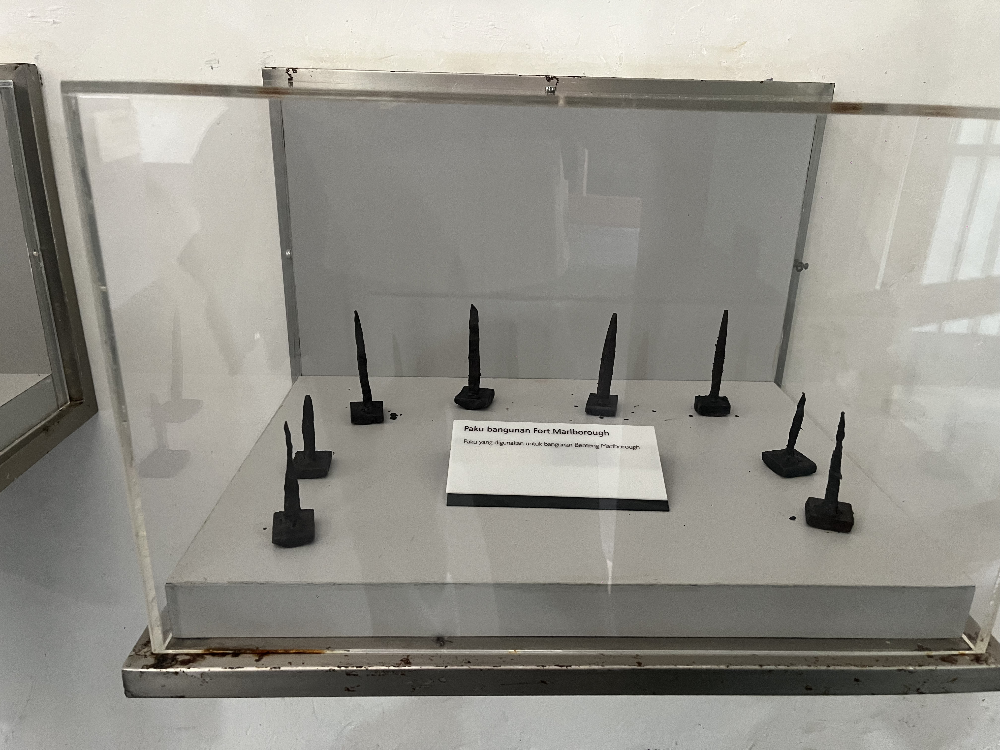

Paku Bangunan Fort Marlborough
"Paku yang digunakan untuk bangunan Benteng Marlborough" Dalam dunia museum dan arkeologi, benda ini disebut "Artefak Paku Tempa Kuno" atau dalam istilah ilmiahnya Hand-Wrought Iron Nail / Paku Besi Tempa.

Alat Tenun Tradisional Bengkulu
Perkakas tradisional pembuatan kain masyarakat suku lokal. Alat tenun tradisional digunakan masyarakat Bengkulu sejak dahulu untuk membuat kain tenun khas daerah, terutama kain tenun suku Rejang dan Enggano.

Gading Gajah
Koleksi patung dengan nilai estetika tinggi yang menggambarkan sejarah.